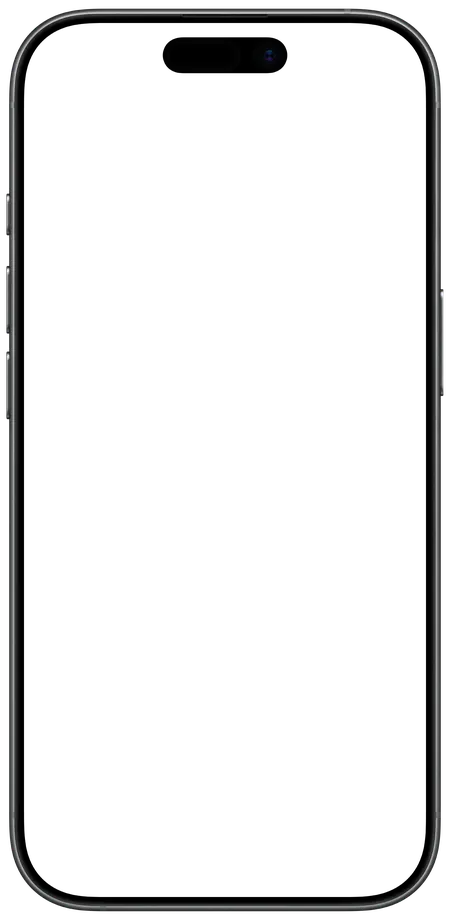
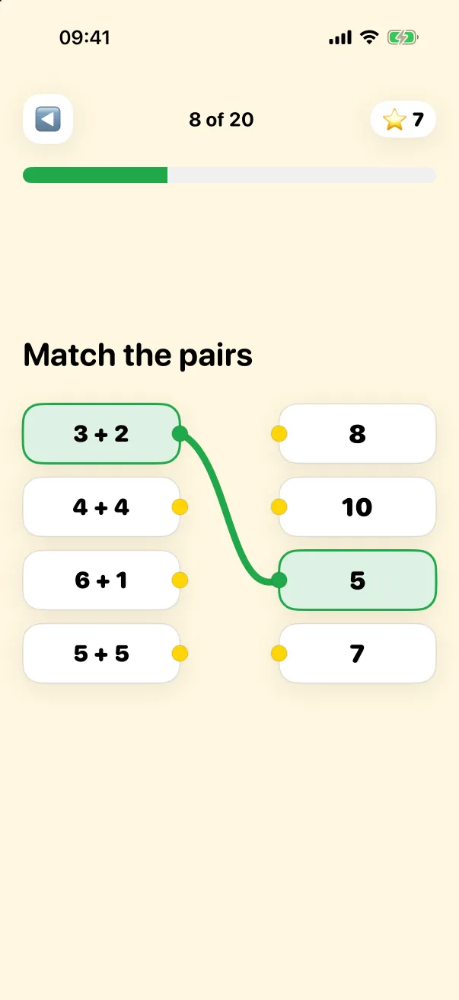

Geni 1.3 is our biggest update so far. The free math and reading app now starts at age 4, adds 30 new picture games, and gives parents a simple weekly view of how their child is doing. Like before, there are no ads, no in-app purchases and no tracking.
Below is everything that's new, and why each change makes practice better for kids.
Math from age 4, with questions read aloud
Most 4-year-olds can't read yet, so the app now reads every question aloud for ages 4 and 5, in English, Norwegian, Spanish and Portuguese. The youngest kids count pictures, find who's first and last in a line, decide which group has more or fewer, show numbers with fingers and name shapes.
Chapters for ages 4 and 5 are also shorter, with 10 exercises instead of 20. Why it's good for kids: young children learn numbers best through things they can see and count, and short sessions end while it's still fun, before attention runs out.


30 new math games
The new games turn each topic into something kids can touch and move:
- Money in your own currency. The shop game uses the coins and bills where you live: dollars, euros, pounds, kroner and more.
- Code a robot. Kids plan a path step by step, an early taste of logical thinking.
- Number bonds to 10 with ten-frames, the classic tool for seeing how numbers fit together.
- Number line, tens and ones, and mental math for ages 7 and up.
- Mirror symmetry, bar charts and story problems, plus fractions, area and perimeter for older kids.
Why it's good for kids: games built on pictures and real objects (coins, robots, ten-frames) help children understand why an answer is right, not just memorize it. And the money game uses the coins and bills kids already see at home.
Kids choose: math or reading first
The daily mission still combines math and, from age 6, reading. Now your child decides which to start with. Why it's good for kids: a small choice gives children a sense of control, and kids who choose are more likely to start on their own.
A calmer design and playful haptics
Geni has a new soft, rounded look with fewer things on screen, so the task is always clear. On iPhone, a gentle vibration celebrates each right answer. Parents can turn it off in settings. Why it's good for kids: a calm screen keeps attention on the math, and feedback they can feel makes a correct answer more rewarding, even for kids who can't read the words yet.
Streaks that forgive a missed day
Streaks motivate kids to come back, but losing a long streak over one busy day can be crushing. With the new streak freeze, one missed day a week won't break it. Why it's good for kids: the habit stays rewarding without turning into pressure.
For parents: a weekly summary and "School is working on"
In the PIN-protected parent area you'll now find a weekly summary: days practiced, exercises done, accuracy, and your child's strongest and hardest topics. With "School is working on", you pick the topics your child is learning at school, and Geni gives them more practice there.
There's also a "Start over" option if you want to reset the app and begin again from the first screen.
What stays the same
- Free, with no ads, no in-app purchases and no tracking.
- Works offline, with progress synced through iCloud.
- Multiple child profiles, each with their own level.
- Difficulty that adapts to each child: harder when it's easy, gentler when it's hard.
Frequently asked questions
What age is Geni for?
Ages 4 to 10. Math starts at 4. Reading is optional at 6 and part of the daily mission from 7.
Can a 4-year-old use Geni without reading?
Yes. For ages 4 and 5, questions are read aloud and the games use pictures.
Is Geni really free?
Yes. No ads, no in-app purchases, no subscription and no tracking.
Does Geni work offline?
Yes. Everything works without internet. Progress syncs through iCloud when you're online.
Which languages does Geni support?
English, Norwegian, Spanish and Portuguese. Geni uses your device language automatically.